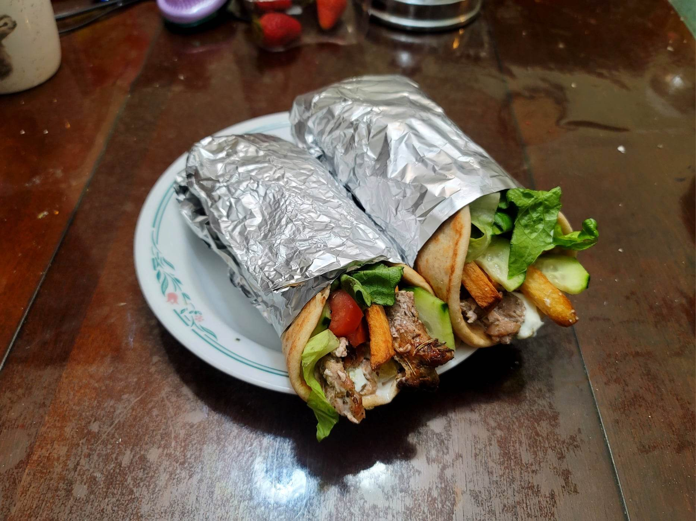

Pork Gyro

Ingredients:
Marinade:
- 1 Pork tenderloin (about 1 1/4 lb)
- Salt, to taste
- Black pepper, to taste
- 1-2 cloves Garlic, grated
- 1/2 Red onion, thin sliced
- 3-4 tbsp Olive oil
- 2 tbsp Red wine vinegar
- 1 tbsp Dried oregano
- 1 tbsp Dried thyme
- 1 tbsp Dried rosemary
- 1/2 tbsp Honey
Other Ingredients:
- 4~ Pita loaves
- Iceberg lettuce, chopped
- Red onions, thin sliced
- Cucumbers, halved and thin sliced
- Tomatoes, thin sliced
- Optional: Cucumber pickles, cut into wedges
- Tzatziki
- Optional: French fries
Instructions:
- Thinly slice the pork tenderloin and then pound the slices with a mallet to flatten. Season both sides with salt and pepper to taste.
- Combine the pork with the rest of the marinade ingredients. Let marinate overnight.
- Prepare the pork onto a vertical rotisserie and place half an onion on the top. Cook on low for about 1 hour or until mostly cooked through. Then set to high and sear the outer edges. Make thin slices from the pork to use in your gyro. Then let the outer edges sear again before repeating.
- Warm a loaf of pita in a pan. Smear some tzatziki in a straight line accross the middle of the pita. Then add the meat followed by the rest of the toppings. Roll with some foil and serve immediately.